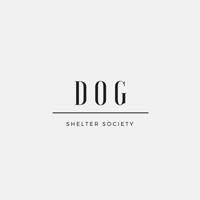

DOG SHELTER SOCIETY
PET RE-HOMING
We know how hard it can be to give up your pet. We want you to do everything possible to keep your pet, but if that becomes impossible, we will do everything in our power to give your pet a second chance to find his forever home.
RETURNING A PET

We will always accept pets adopted from us back into care, no matter how long ago the adoption occurred. It may take us a few days to accommodate your request for us to accept your animal, however, depending on shelter space availability.
SURRENDERING A STRAY DOG
If you have found a Stray dogs and would like to bring it to us, we can only accept it if we have available space and it was found in the municipality of Lagos, If you have found a stray animal in another area, please contact the animal control in that jurisdiction.
EXCEPTIONS
Even though we may not have room to accept new animals, we will make room for Stray dogs who are desperately in need of our immediate assistance because of injury, illness or because they are too young to care for themselves. Please let us know exactly the case.
We do not accept wild animals. If you have found a wild animal and are certain that it needs help, please contact Fox Algarve Wildlife Center in Faro at (444) 444-4444.